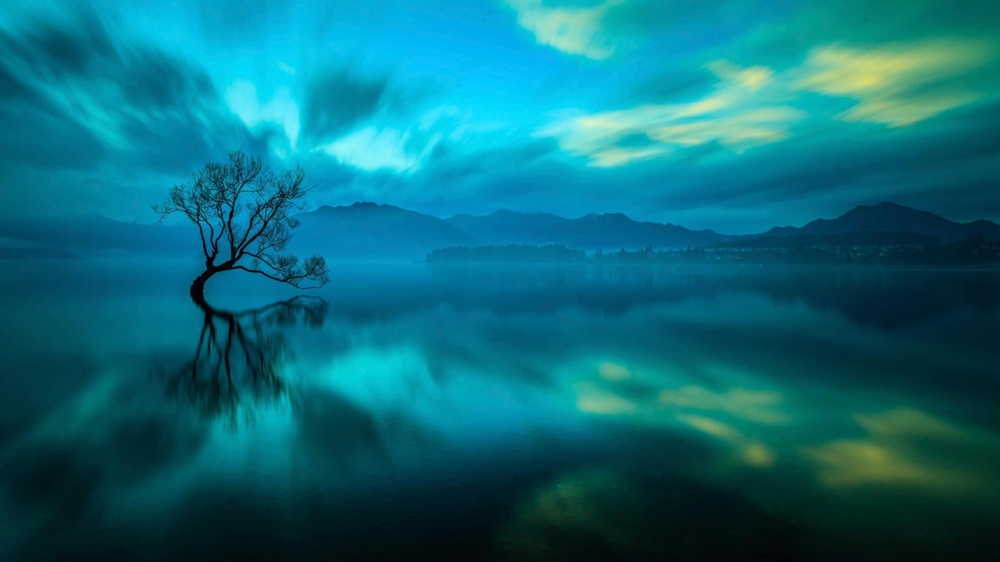
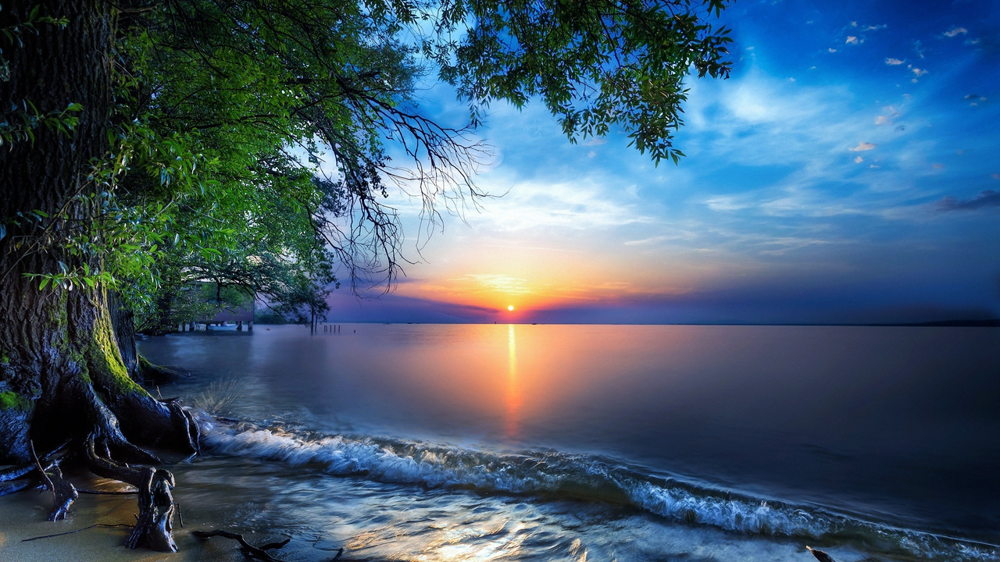
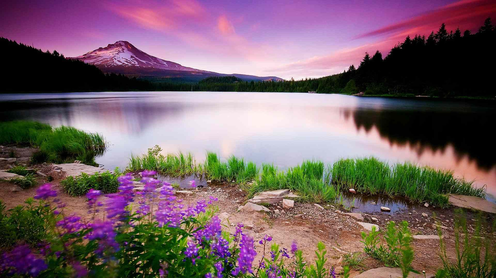
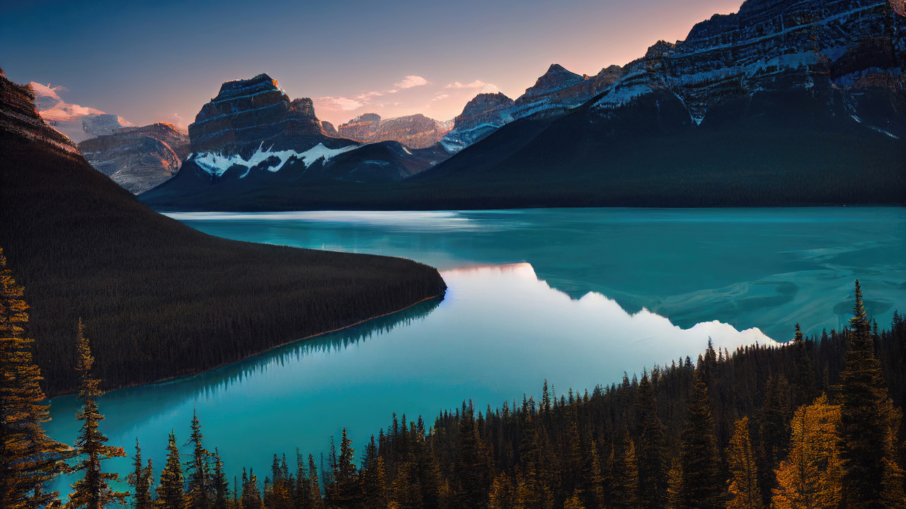

domovská stránka
to nejlepší
nejlepší místa - léto
nejlepší místa - zima
když do města
co s sebou
galerie týmu NatureSpotCZ

zaplavený strom po zvednutí hladiny jezera

západ slunce nad obřím jezerem

liduprázdné rakouské horské jezero

řeka mezi majestátními horami Kanady